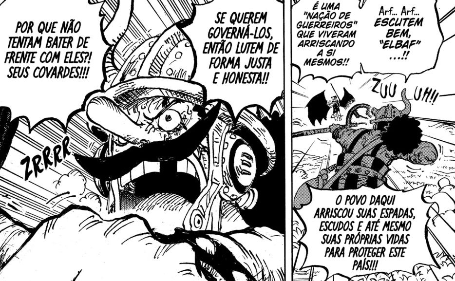

Atenção aos Spoilers
Essa área é dedica para os fãs que querem se manter atualizados com as últimas
novidades de One Piece, recebendo o momento de apice do ultimo capitulo lançado e revelando detalhes cruciais da trama.
Em Breve, essa área será atualizada com mais detalhes dos ultimos capítulos, mantendo os fãs informados sobre os acontecimentos mais emocionantes do mangá.
Usopp chama Imu-sama para o x1?
No arco Egghead de One Piece, Usopp desafia Imu-sama, o governante supremo do Governo Mundial, com a arma ancestral. Este desafio é um momento crucial na narrativa, onde Usopp busca confrontar Imu pessoalmente, o que pode ter implicações significativas para a história. A teoria popular sugere que Usopp pode ter sido o responsável por "chamar" Imu para a luta, levando a uma situação de tensão em Elbaph.
Ragebait do Usopp
- "O One Piece deve ser sua coragem, por isso ninguém encontrou, e quem encontrou começou a dar risada"
- "Rapaz, parece que arma ancestral só dispara na mão de homem né?"
- "Apagou sua coragem junto do século perdido? Seu Corno".
- "Pelo visto onde vendia akuma no mi, não vendia coragem"
- "Só me chamam de covarde porque não conhecem você"
